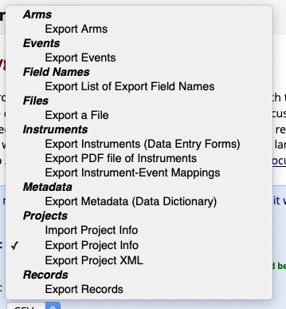
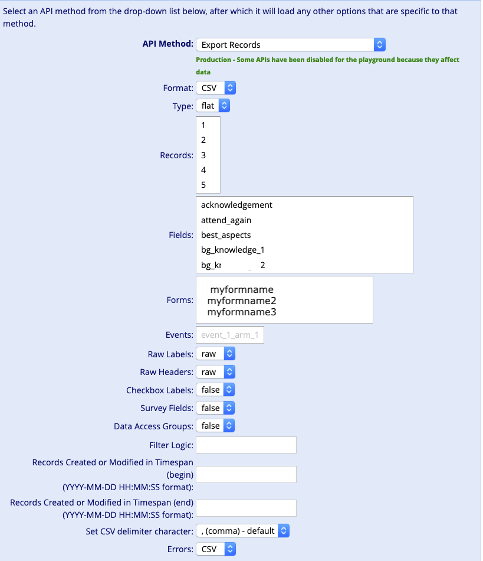
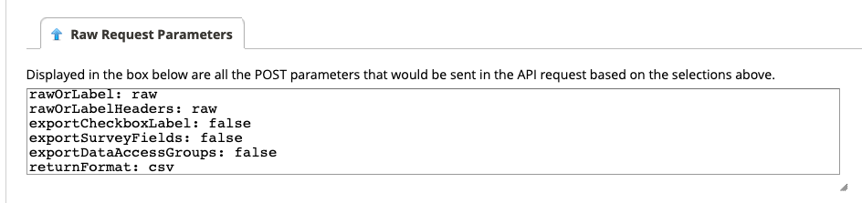

Querying the REDCap API on Windows: avoiding 443 errors and RCurl woes
Like many other educational and research institutions, the University of Sydney (where I work) supports the use of REDCap as a survey platform. I also use it, in part because one of the most attractive features of the REDCap API over other survey tools like Qualtrics, Google Forms and SurveyMonkey is the fact that the API playground supports GUI-style selection of what you want, with REDCap providing template code in a wide variety of languages.

Languages include PHP, Perl, Python, R, Ruby, Java & UNIX’s curl, and output format options include json, csv and XML.
Further, when you request to export Records, it will nicely provide you with even more options that allow you to point and click to get the actual, real data you want, without needing to delve into the joys of XPATHs and XML.

Under the hood, this is a POST form, and REDCap will explicitly show you what data you’ve submitted in the “Raw request parameters” tab.
It will also provide you with the code you’d use to get the same data programmatically. There’s also a “Click the Execute Request button to execute a real API request, and it will display the API response in a text box below.” so you can preview what you’d get back as an object when loading this into your programming language of choice.

As an example, when I try to retrieve the records from our feedback form (which I’ve called myformname in the images/code above), it suggests the following R code for me (this returns the records themselves in a csv, and the errors in json):
#!/usr/bin/env Rscript
apisecret <- 'myapikey' # you get this when you enable REDCap API access for your project
library(RCurl)
result <- postForm(
uri='https://redcap.sydney.edu.au/api/',
token=apisecret,
content='record',
format='csv',
type='flat',
csvDelimiter='',
'forms[0]'='myformname',
rawOrLabel='raw',
rawOrLabelHeaders='raw',
exportCheckboxLabel='false',
exportSurveyFields='true',
exportDataAccessGroups='false',
returnFormat='json'
)
print(result)
And all is well and good … if you’re on a Mac! However, when I recently tried to run this (fully working!) code on a Windows machine (since this particular survey data goes into a PowerBI dashboard I’ve built) - I encountered a 443 error instead! Apparently, this is a known issue, but while it’s suggested to use the httr package instead (or one of the dedicated REDCap R packages), there was no template code available.
After a bit of exploration, the below ended up working, and I’m sharing this template code in the hopes of saving others (at Sydney Uni and elsewhere) the hassle of having to figure this out:
#!/usr/bin/env Rscript
apisecret <- 'myapikey' # you get this when you enable REDCap API access for your project
library(curl)
h1 <- new_handle()
handle_setform(h1,
'token' = apisecret,
'content' = "record",
'format' = "csv",
'type' = 'flat',
'csvDelimiter'= ',',
'forms[0]'= 'myformname',
'rawOrLabel'= 'raw',
'rawOrLabelHeaders'= 'raw',
'exportCheckboxLabel'= 'false',
'exportSurveyFields'= 'true',
'exportDataAccessGroups'= 'false',
'returnFormat'= 'json')
surveyresults <- read.csv(text = rawToChar(
curl_fetch_memory("https://redcap.sydney.edu.au/api/", handle = h1)$content),
na.strings = ""
)
Now, the curl::handle_setform() command looks pretty similar to the RCurl::postForm() request, but it needs to be combined with the curl::curl_fetch_memory() command^[1 Yes, we could have used the curl::curl_fetch_disk() command to download the file to disk, which seems to work a lot better and actually save the file as a non-binary .csv file. However, for this particular project, I’m doing a lot of data cleaning before I write the output to disk, and I’d rather not store two copies of the same scrape.], which has a few quirks:
- It returns the actual data in the
contentattribute, and not the data frame directly - hence the need for the$content - It returns the data in raw format (and, no, setting the
rawOrLabelto label does not solve this), so you need to pass it intobase::rawToChar(). read.csv’s defaults are to accept a filepath, so we use an arguement calledtextto specify that we’re straight feeding in the actual data in instead.
The other useful thing to “grab” when working with data tends to be the data dictionary, for which the code looks quite similar:
#!/usr/bin/env Rscript
apisecret <- 'myapikey' # you get this when you enable REDCap API access for your project
h2 <- new_handle()
handle_setform(h2,
'token' = apisecret,
'content' = "metadata",
'format' = "csv",
'forms[0]'= 'myformname',
'returnFormat'= 'csv')
datadict <- read.csv(text = rawToChar(
curl_fetch_memory("https://redcap.sydney.edu.au/api/", handle = h2)$content)
)
I hope this is helpful for others who use REDCap on Windows, or who need to write code that works across all of the major operating system platforms!